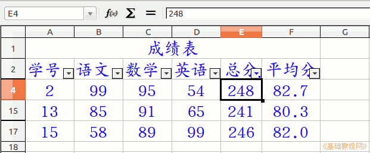

2015-2016 第一学期七年级电子表格和音视频编辑教学设计
作者：TeliuTe 来源：基础教程网
十三、 返回目录 下一课
（一）教学设计
1、学习目标：
2、注意事项：绕过弯来，既不要跳也不要落，一楼过了二楼
3、教学过程：
1）教师准备学案和板书；
2）学生整队进入，开机抄黑板上笔记；
3）教师讲解板书演示操作；
4）学生打指法、日志、完成操作；
5）教师打勾记录学生指法成绩，检查日志和操作；
注：学生抄完笔记就开始打指法、日志，老师讲完后再继续完成；
操作图示：

（二）板书设计(学生笔记)、课后记
13学会筛选分数
1.表头，15人成绩
2.全选，复制，选择性粘贴
3.点数据，筛选，自动筛选
4.点下拉按钮，标准筛选
第13课 学会统计分数段
1.表头，15人成绩，随机函数
2.框选，复制，选择性粘贴
3.框选标题，点“数据，筛选，自动筛选”
4.点三角，标准，>240
--
2016年05月06日 星期五 13:11
--
前面的sum和average在第4课上过
找的时候第一行是sum第4行是average
--
设置两位小数也有忘记的，
自动填充的时候，第一个语文做出来，
--
横着拖也行，然后竖着整个就出来了，前面要练一下才好
有个学生把总分sum的参数分成两个框，前面输惯了检查半天才发现
--
下周一期中考试，学生有些燥的，不抄笔记的训一顿
要用第4课的总分和平均分函数，没抄的做不出来
--
昨天的两节八年级的也放今天，一下好多课
累的腿疼，嗓子是用嗓子发音也不是很好，还要多练练才好
--
看直播平台有些上瘾了，缓解下压力学学声音的效果
或许过一阵就不在乎了也是
返回目录 下一课
本教程由86团学校TeliuTe制作|著作权所有
基础教程网：http://teliute.org/
美丽的校园……
转载和引用本站内容，请保留作者和本站链接。